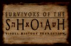

Überleben im Cyberspace

 "Schindlers Liste hat mein Leben von Grund auf verändert".
"Schindlers Liste hat mein Leben von Grund auf verändert".

 Die Konfrontation mit dem Holocaust-Thema führte Steven Spielberg dazu, sich mit seiner bis dahin eher verdrängten jüdischen Herkunft zu identifizieren,
und die Berichte vieler Überlebender, die er bei der Filmarbeit kennenlernte, öffneten seinen Blick dafür, daß es noch Hunderte, noch Tausende von unerzählten Schicksalen gäbe.
Die Konfrontation mit dem Holocaust-Thema führte Steven Spielberg dazu, sich mit seiner bis dahin eher verdrängten jüdischen Herkunft zu identifizieren,
und die Berichte vieler Überlebender, die er bei der Filmarbeit kennenlernte, öffneten seinen Blick dafür, daß es noch Hunderte, noch Tausende von unerzählten Schicksalen gäbe.
 Am 17. Januar 1996 meldete die Survivors of the Shoah Visual History Foundation aus Los Angeles habe sie Ihr 10.000. Holocaust-Uberlebenden seine Gschichte vor einer Beta-SP-Videokamera
erzählen lassen. Im Februar 1999 besuchte Steven Spielberg die diesjährige Biennale in Berlin, wo der Dokumentarfilm der Stiftung "The Last Days" grosse Aufmerksamkeit erfuhr,und verkündete auf einer Benefizveranstaltung fuer die Shoah-Foundation, dass inzwischen das Fünfzigtausendste Inteview geführt wurde.
Man bemuehte sich, auch nichtjüdische Verfolgte einzubeziehen und hat bisher über 60 Interviews mit Sinti und Roma, Zeugen Jehovas, Homosexuellen und politischen Gefangenen geführt.
Am 17. Januar 1996 meldete die Survivors of the Shoah Visual History Foundation aus Los Angeles habe sie Ihr 10.000. Holocaust-Uberlebenden seine Gschichte vor einer Beta-SP-Videokamera
erzählen lassen. Im Februar 1999 besuchte Steven Spielberg die diesjährige Biennale in Berlin, wo der Dokumentarfilm der Stiftung "The Last Days" grosse Aufmerksamkeit erfuhr,und verkündete auf einer Benefizveranstaltung fuer die Shoah-Foundation, dass inzwischen das Fünfzigtausendste Inteview geführt wurde.
Man bemuehte sich, auch nichtjüdische Verfolgte einzubeziehen und hat bisher über 60 Interviews mit Sinti und Roma, Zeugen Jehovas, Homosexuellen und politischen Gefangenen geführt.
 In diesem Jahr wird das Archiv der Aussagen über Computernetz
In diesem Jahr wird das Archiv der Aussagen über Computernetz
dem Simon Wiesenthal Center in Los Angeles,
dem Museum of Jewish Heritage,
dem Holocaust Memorial Museum in Washington,
dem Fortunoff Archive for Holocaust Testimonies an der Yale University und
der Gedenkstätte Yad Vashem in Jerusalem zugänglich gemacht.
Inzwischen ist eine Niederlassung der Shoah Foundation in Berlin geplant. Es steht allerding eine Entscheidung zum Standort noch aus. Spielberg würde es begruessen, wenn die Videos und Daten im Rahmen des geplanten Holocaust-Mahnmals der Öffetnlichkeit zugänglich gemacht werden könnten.